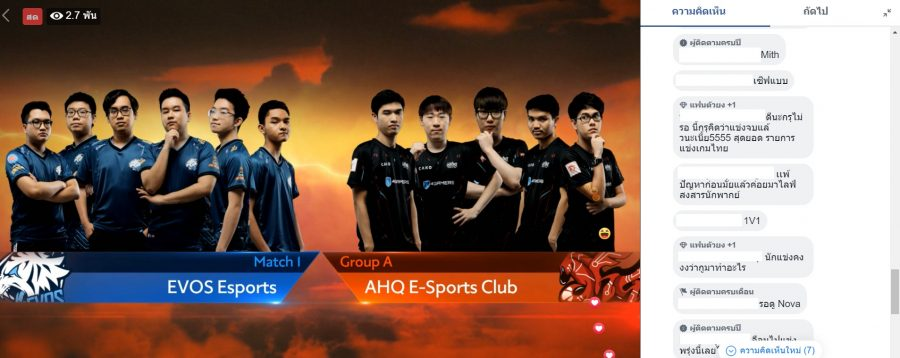
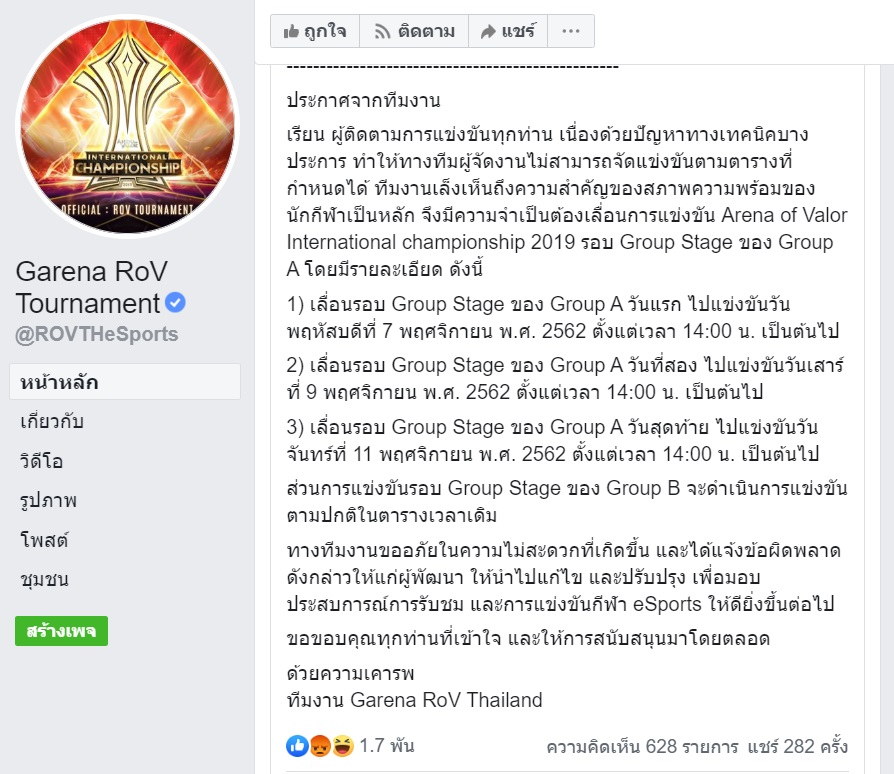

ถือว่าเป็นการเปิดตัวที่ไม่สวยงามเท่าไหร่นัก กับ Arena of Valor : International Chapionship 2019 หรือ AIC 2019 ที่เจอ “ปัญหาทางเทคนิคบางประการ” จนต้องยกเลิกการแข่งขันในวันแรกไปทั้งหมด ท่ามกลางสายตาของผู้เล่นจากนานาชาติที่เฝ้ารอชมการแข่งขันอยู่
โดยตามกำหนดการ ในวันที่ 5 พ.ย. ที่ผ่านมา จะต้องมีการแข่งขันทั้งหมด 5 คู่ และการแข่ง 1 vs 1 ที่เป็นรายการพิเศษอีกหนึ่งงาน เริ่มแข่งตามกำหนดการ 14.00 แต่ทั้งหมดก็ต้องถูกยกเลิกไป เมื่อในการแข่งคู่แรกระหว่าง AHQ Esport club และ EVOS Esports ประสบปัญหาบางประการจนกระทั้งต้องหยุดการแข่งไปโดยที่เกมได้ดำเนินไปแล้วส่วนหนึ่ง ปัญหาดูจะรุนแรงขึ้นจนกระทั้งจากการหยุดเกมก็เป็นการพักเข้าโฆษณา และเกมก็กลับมาเล่นได้อีกครั้งในเวลาประมาณ 15.00 น.
แต่เกมก็ได้หยุดลงอีกครั้งหลังจากดำเนินไปได้เพียงไม่กี่นาที เมื่อมีผู้เล่นของทีม EVOS หลุดออกจากเกมด้วยเหตุผลที่ยังไม่ได้รับการชี้แจง เกมได้ถูกหยุดลงกว่า 10 นาทีและตัดเข้าโฆษณาอีกครั้ง คราวนี้จึงเป็นการรอของจริงที่ยาวนานของทั้งแฟนๆ ชาวไทยและต่างชาติที่มาชมทีมจากประเทศตัวเองลงแข่งขัน หลังจากที่การหยุดเกมยืดเยื้อไปถึงเวลาประมาณ 17.00 น. ในที่สุด Garena ก็ยอมแพ้ ยกเลิกการแข่งขันในวันแรกไปในที่สุด โดยการแข่งในวันที่ 5 พ.ย. จะถูกเลื่อนไปวันอื่นแทน หรือจนกระทั่งปัญหาทั้งหมดได้รับการแก้ไขแล้ว
นี่จึงเป็นการเลื่อนการแข่งขันระดับนานาชาติครั้งแรกของ RoV และเป็นครั้งแรกที่เกิดปัญหาใหญ่จนกระทั้งมีการดำเนินการในลักษณะนี้ด้วย อย่างไรก็ตาม ปัญหาเช่นนี้ก็เคยเกิดมาแล้วครั้งหนึ่งในงาน Pro League Season 4 ที่พึ่งจบไปหมาดๆ ทำให้การแข่งขันทั้งหมดที่ควรจะจบลง ณ. เวลา 22.30 น. ก็ยืดยาวออกไปจบถึงเวลา 1.00 น. ของอีกวันหนึ่งมาแล้วเช่นกัน
แต่ท่ามกลางความไม่พอใจของทั้งแฟนๆ ชาวไทยในฐานะเจ้าบ้าน และแฟนๆ นานาชาติที่ติดตามการแข่งแล้ว ก็ยังมีอีกหลายฝ่ายที่ยังคงให้กำลังใจทีมผู้จัดงาน และเข้าใจว่านี้เป็นเหตุสุดวิสัยที่คงไม่มีใครอยากให้เกิดขึ้น โดยการแข่งขันนั้นจะยังคงดำเนินต่อไป และแฟนๆ ก็คาดว่าเหตุการณ์ในครั้งนี้ก็คงจะทำให้ทีมผู้จัดงานมีความพร้อมมากขึ้นกับปัญหาที่อาจปรากฏอีกในอนาคตแล้ว